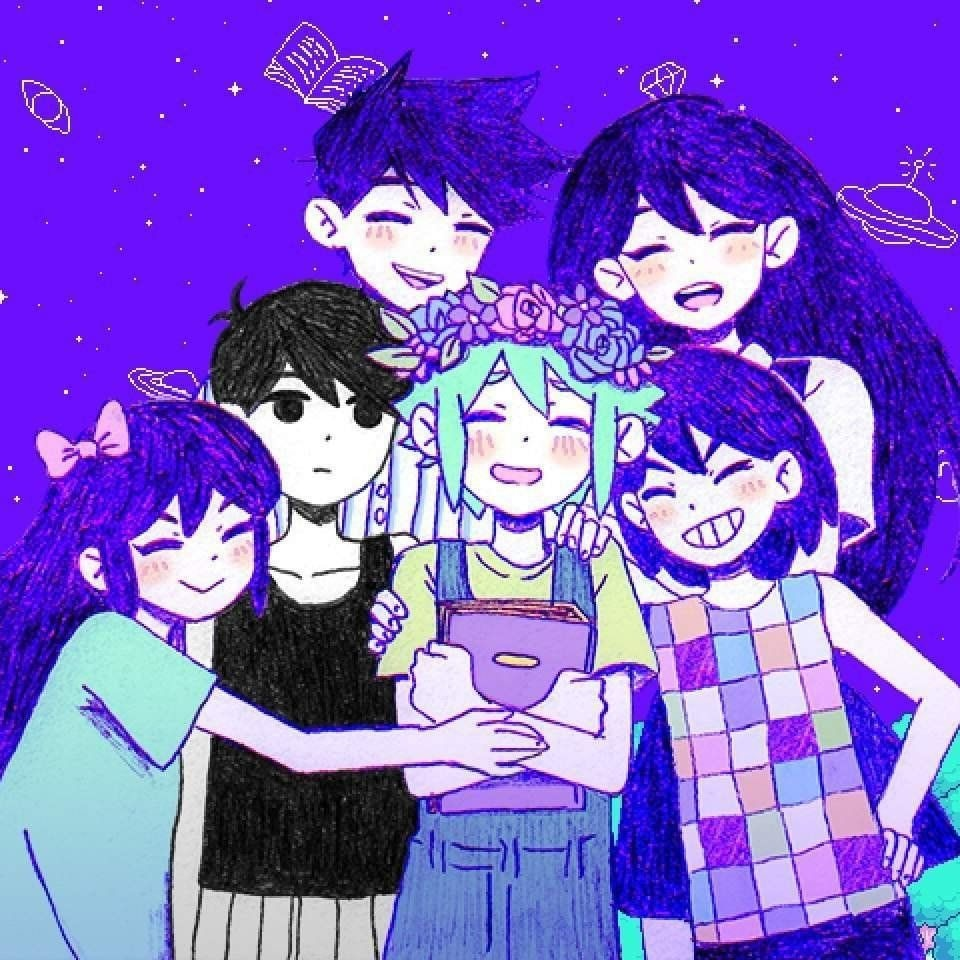

OMOCAT (Diretor de Jogos) é um ilustrador e dono da OMOCAT LLC. OMORI é um projeto especial de grande valor para essa pessoa. OMOCAT passou anos trabalhando arduamente em OMORI com o resto de seu time em cada aspecto do jogo, incluindo roteiro, arte e programação. Agore que OMORI foi lançado, está ansioso para dirigir novos projetos.
MINCED / CHARLENE LU (Ilustrador, Animador, Leaf) é um artista que reflete e se adapta ao ambiente. Muitos pensamentos rodeiam sua mente, mas continua sempre a tentar dar o seu melhor para transmitir o que quer com sinceridade. Não há problema em dar um passo de cada vez e aproveitar a vida!
EMS / EMILY SHAW (Pixel Artist, Designer de Mapas, Entusiasta de Hamsters) é uma ilustradora que passa mais de 3 horas em buffets. A Dear Protagonist é a sua marca pessoal dedicada a celebrar a individualidade e sensibilidades delicadas, ao mesmo tempo que se diverte com as suas séries favoritas. Ela adora dar vida a poesia e narrativas e espera que gostem do mundo vibrante e mundano da OMORI!
CLOVER & SEALIFE (Compositor) é o projeto de Jami Lynne, uma compositora, vocalista e musicista eletrónica baseada em Seattle, Washington. Com uma profunda influência e amor pelos sons de caixas de ritmo vintage, shoegaze e city pop, CLOVER & SEALIFE canta uma canção de sentimentalismo e esperança incerta frente à melancolia. Ela espera que o seu trabalho na trilha sonora de OMORI possa expressar o sentimento de encontrar pequenos pedaços de alegria no desespero, através da música de jogos com qualidade de CDs antigos.
BLUEMOON / LUCA MASTROIANNI (Programador) é programador e criador de jogos indie há 5 anos e gosta de programar em todas as linguagens. Estudou piano durante dez anos, mas também sabe tocar guitarra, baixo e bateria. Como todo italiano, adora pizza e come-a uma vez por semana, também adora café com ginseng. Gosta muito de jogos, e alguns dos seus outros passatempos são ver anime, ler mangás e estudar história e economia. Também gosta de virar a noite com os amigos, dançar e beber vinho. É apenas um cara italiano normal.
OCEAN’S DREAM / CESAR RENDON (Programador, Guloso pacas) é um programador de jogos indie de longa data, tendo trabalhado em vários projectos antes de OMORI. O fammoso pau pra toda obra e trabalha em um pouco de tudo. Ele também é obcecado por pizza.
SLEEPYKUYA / ANDREW VANCE (Programador de Batalha) faz a programação do sistema de batalha, o que implica equilibrar as estatísticas dos inimigos e dos jogadores, habilidades, itens e assim por diante. Ele também é incrivelmente bom em corrigir furos de roteiro.
YIN / WHITNEY E. WHITE (Programadora) é um pouco introvertida, mas adora fazer jogos e conviver com pessoas que pensam como ela. Trabalhou em vários títulos indie antes de OMORI, inspirando-se em jogos clássicos de épocas anteriores, particularmente JRPGs. Quando não está fazendo jogos, é uma orgulhosa mãe de seis filhos e um pouco connoisseur de comida, sendo as suas favoritas cheesecake e lasanha. Ocasionalmente, também faz lives de desenvolvimento de jogos e até de gameplay durante o tempo livre. Criar jogos sempre foi uma grande parte da sua vida e ela aproveita cada momento.
CZO / CACHI CORDOVA (Programador) está atualmente estudando desenvolvimento de jogos na faculdade e tem feito e programado jogos para os seus amigos desde o fundamental 2. Usa o RPG Maker há 5 anos e gosta de fazer experiências criando mecânicas complexas dentro da engine existente. Ele gosta de jogos de todos os tipos, mas adora especialmente jogos de terror... e bruxas.
ANDREW BATINO (Editor) ajuda a corrigir erros de digitação e frases mal feitas; também já trabalhou com a parte de vestuário do OMOCAT no passado. Adora jogar jogos de ritmo e de luta, apesar de ser medíocre neles, e queixa-se frequentemente do balanceamento nos jogos de cartas. Também coleciona pelúcias de uma certa série oriental.
KIMBERLY VANCE (Game Tester) é uma assistente administrativa na OMOCAT que ajuda com OMORI, tanto como game tester como fazendo animações. É também uma ilustradora freelancer que trabalha com comissões nos seus tempos livres. Não consegue passar mais de dois dias sem beber boba.
ROCHELLE CONCEPCION (Game Tester) normalmente trabalha na seção de vestuário da OMOCAT, mas também se tornou game tester e animadora. Ela gosta de fazer miniaturas e outros objetos estranhos, e gosta especialmente de tubarões e café.
AIVI (Game Tester) não tem nenhum talento real discernível além de levar as pessoas à beira da loucura. Ajuda principalmente na edição de diálogos, mas também faz alguma garantia de qualidade de vez em quando. Também ajuda a organizar as contas das redes sociais de OMORI.
PRIDE-KUN (Game Tester) passa o seu tempo sendo uma artista freelancer e entusiasta de OC, jogando jogos e comendo tacos pra k7. Ela ajuda a escrever e a testar e está constantemente desenhando fanarts do jogo.
KAIRU / KYLE OLIMAN (Game Tester) também faz coisas para o jogo... mas mais na parte dos testes! Quando não está ocupado tentando estragar o jogo, pode ser visto estudando animação, gadando idols ou pensar se deve girar o gacha mais uma vez.
MOOGIRI / DANNY NGUYEN (Game Tester) é um streamer da Twitch e está constantemente viajando em sua mente. Está sempre à procura da próxima surpresa para fomentar sua imaginação e espera que todos gostem do jogo tanto quanto ele. Por alguma razão, ele também gosta muito de DINO DIG...
WAN (Programador Web, Cão) é um cão de porte médio que também faz coisas na Internet e adora trabalhar com matemática. Gosta de uma grande variedade de jogos, mas sobretudo de jogos com personagens e narrativas fortemente emocionais.
RAI (Game Tester) gosta de coisas fofas, de cantar, de jogar jogos competitivos e foi recentemente pega pelo último hit da internet... peko. 


OMORI © OMOCAT, LLC.